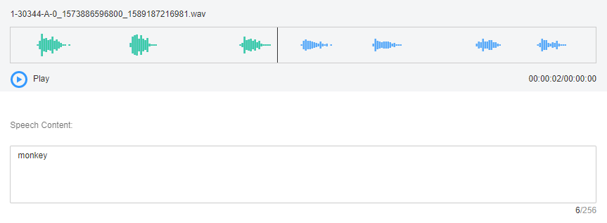

Model training requires a large amount of labeled data. Therefore, before the model training, label the unlabeled audio files. ModelArts enables you to label audio files in batches by one click. In addition, you can modify the labels of audio files, or remove their labels and label the audio files again.
Starting Labeling
- Log in to the ModelArts management console. In the left navigation pane, choose Data Management > Datasets. The Datasets page is displayed.
- In the dataset list, select the dataset to be labeled based on the labeling type, and click the dataset name to go to the Dashboard tab page of the dataset.
By default, the Dashboard tab page of the current dataset version is displayed. If you need to label the dataset of another version, click the Versions tab and then click Set to Current Version in the right pane. For details, see Managing Dataset Versions.
- On the Dashboard page of the dataset, click Label in the upper right corner. The dataset details page is displayed. By default, all data of the dataset is displayed on the dataset details page.
Synchronizing the Data Source
ModelArts automatically synchronizes data and labeling information from Input Dataset Path to the dataset details page.
To quickly obtain the latest data in the OBS bucket, click Synchronize Data Source on the Unlabeled tab page of the dataset details page to add the data uploaded using OBS to the dataset.
Labeling Audio Files
The dataset details page displays the labeled and unlabeled audio files. The Unlabeled tab page is displayed by default.
- In the audio file list on the Unlabeled tab page, click the target audio file. In the area on the right, the audio file is displayed. Click
 below the audio file to play the audio.
below the audio file to play the audio. - In Speech Content, enter the speech content.
- After entering the content, click OK to complete the labeling. The audio file is automatically moved to the Labeled tab page.Figure 1 Labeling an audio file

Viewing the Labeled Audio Files
On the dataset details page, click the Labeled tab to view the list of the labeled audio files. Click the audio file to view the audio content in the Speech Content text box on the right.
Modifying Labeled Data
After labeling data, you can modify labeled data on the Labeled tab page.
On the data labeling page, click the Labeled tab, and select the audio file to be modified from the audio file list. In the label information area on the right, modify the content of the Speech Content text box, and click OK to complete the modification.
Adding Audio Files
In addition to automatically synchronizing data from Input Dataset Path, you can directly add audio files on ModelArts for data labeling.
- On the dataset details page, click the Unlabeled tab. Then click Add Audio in the upper left corner.
- In the Add Audio dialog box that is displayed, click Add Audio.
Select the audio files to be uploaded in the local environment. Only WAV audio files are supported. The size of an audio file cannot exceed 4 MB. The total size of audio files uploaded at a time cannot exceed 8 MB.
- In the Add Audio dialog box, click OK.
The audio files you add will be automatically displayed on the Unlabeled tab page. In addition, the audio files are automatically saved to the OBS directory specified by Input Dataset Path.
Deleting Audio Files
You can quickly delete the audio files you want to discard.
On the Unlabeled or Labeled tab page, select the audio files to be deleted, and then click Delete File in the upper left corner. In the displayed dialog box, select or deselect Delete source files as required. After confirmation, click OK to delete the audio files.

If you select Delete source files, audio files stored in the corresponding OBS directory will be deleted when you delete the selected audio files. Deleting source files may affect other dataset versions or datasets using those files. As a result, the page display, training, or inference is abnormal. Deleted data cannot be recovered. Exercise caution when performing this operation.